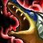

Renekton is a strong top laner whose purpose is to bully the enemy toplaner so that his team will be able to just easy their way pass. The top lane is one of the lanes needed so that the team game would be able to group together. The denial of CS and kills to the enemy toplane is the job of Renekton. A careless toplaner will face punishment if they do not know how to play against this champion. Make sure to avoid being kited or you will face punishment yourself. If able, try to keep the enemy jungler top mostly so that your jungler will be able to take objectives. Most likely dragon is important so that your team would gain a huge lead over the enemy. One of his weak spots is his late game. He has such a weak late game so he relies on his team while he interrupts the enemy. That is why when you win top lane, you would rather help out other lanes. If you win top lane and out CS your enemy by lots, you would most likely win the game if your team does not make any dumb moves without thinking. Usually within fights, Renekton is to go to the enemy backline and wreck the enemy carries if possible, but if your teammates are not able to protect your backline, you will have to just slowly pull apart the enemy for your carry so he will be able to wreck the enemy for you.
Skins are a way to improve your gameplay. To buy a skin you must use RP. RP is short for Riot Point. To obtain riot points you must use real money in order to buy them. Since they do not help with the game mechanics, they aren't buy able with IP. Skins are made so you can look different than others. Some cost a lot and some don't cost as much. Some skins connect with other champions or just be its own type. Some skins alters the usage of skills and much others.
Renekton gains 50% more Fury from all sources while below half health.
Renekton does not use mana, instead he has a bar called "Fury". This bar shows what his fury is out of 100.
When Renekton reaches 50 fury, his next skill is empowered. He can hold a maximum of 100 fury at a time
and consumes 50 whenever he uses a skill which can be empowered by Fury. Fury is gained whenever he basic
attacks, but he does not gain Fury when basic attacking turrets.
ACTIVE: Renekton deals physical damage to all enemies within range, gaining 5 Fury for each target hit and healing for some of the damage
dealt, up to a cap. Renekton heals for 20% of the damage dealt to champions and 5% of the damage dealt to minions and monsters.
FURY BONUS: Cull the Meek deals 50% additional damage. The heal is doubled to 40% against champions and 10% against minions and
monsters, and the healing cap is tripled.
PHYSICAL DAMAGE:
60 / 90 / 120 / 150 / 180 (+ 80% bonus AD)
HEALING CAP:
50 / 75 / 100 / 125 / 150
EMPOWERED DAMAGE:
90 / 135 / 180 / 225 / 270 (+ 120% bonus AD)
EMPOWERED HEALING CAP:
150 / 225 / 300 / 375 / 450
ACTIVE: Renekton's next basic attack will hit twice, stunning his target for 0.75 seconds and dealing physical damage equal to a base
amount plus a percentage of his attack damage. Each hit applies on-hit effects and grants Fury.
FURY BONUS: Ruthless Predator will strike his opponent 3 times, dealing 50% additional damage and increasing the stun duration to 1.5 seconds.
Each hit still applies on-hit effects, but does not grant Fury.
PHYSICAL DAMAGE PER HIT:
5 / 15 / 25 / 35 / 45 (+ 75% AD)
TOTAL PHYSICAL DAMAGE:
10 / 30 / 50 / 70 / 90 (+ 150% AD)
TOTAL EMPOWERED DAMAGE:
15 / 45 / 75 / 105 / 135 (+ 225% AD)
ACTIVE: (Slice and Dice) Renekton dashes forward, dealing physical damage to enemies he hits along the way, but will not apply the fury bonus. If he hits a target he gains the ability to use
Dice for 4 seconds.
(Only Slice grants the ability to use Dice)
(Only Dice applies the fury bonus)
FURY BONUS: Dice deals 50% additional damage and shreds the armor of targets hit for 4 seconds.
PHYSICAL DAMAGE:
30 / 60 / 90 / 120 / 150 (+ 90% bonus AD)
EMPOWERED DAMAGE:
45 / 90 / 135 / 180 / 225 (+ 135% bonus AD)
ARMOR REDUCTION:
15% / 20% / 25% / 30% / 35%
ACTIVE: Renekton empowers himself with dark energies for 15 seconds, enlarging his size and gaining bonus health.
While in this state, he deals magic damage each second to enemies within 175 range and generates 5 Fury per second.
Dominus does not gain a benefit from Fury.
HEALTH GAIN:
200 / 400 / 800
MAGIC DAMAGE PER SECOND:
30 / 60 / 120 (+ 10% AP)
MAXIMUM DAMAGE:
450 / 900 / 1800 (+ 150% AP)
